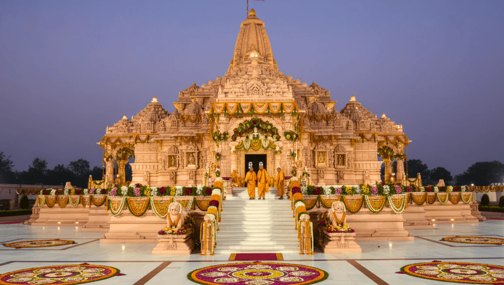
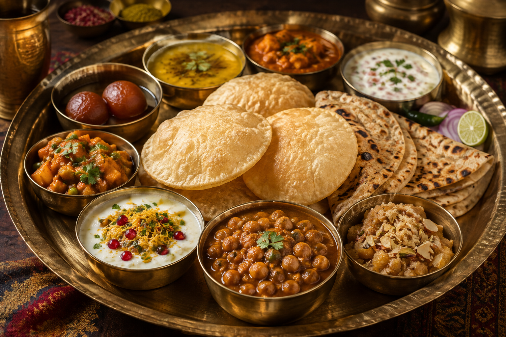

01
Varanasi
One of the world's oldest continuously inhabited cities, sacred for its Ganga Aarti, 84 ghats, and spiritual ethos.

Discover the spiritual heart of India, world-renowned monumental heritage, royal Awadhi cities, and timeless traditions of Uttar Pradesh.
Explore Uttar Pradesh ↓Uttar Pradesh is one of India's most historically profound and culturally vibrant states, defined by ancient civilizations along the sacred Ganga and Yamuna rivers.
From the eternal ghats of Varanasi and the marble poetry of the Taj Mahal in Agra to the royal courtesies of Lucknow and sacred Ayodhya, Uttar Pradesh offers experiences that resonate deeply across centuries.
Iconic cities and spiritual landmarks of Uttar Pradesh.
One of the world's oldest continuously inhabited cities, sacred for its Ganga Aarti, 84 ghats, and spiritual ethos.

Home of the Taj Mahal, Agra Fort, and Fatehpur Sikri — masterpieces of Mughal marble and sandstone architecture.

The City of Nawabs — celebrated for Bara Imambara, delicate Chikankari embroidery, and refined Awadhi cuisine.

An ancient sacred city situated on the banks of river Saryu, renowned for deep spiritual history and majestic temples.
Uttar Pradesh offers a celebrated culinary heritage blending Awadhi royal banquets, fragrant Mughlai gravies, and delicious local street snacks.

Birthplace of the Lucknow Kathak Gharana, Benares classical music traditions, and soulful Thumri vocal styles.
Vibrant Lathmar Holi in Barsana, Dev Deepawali in Varanasi, and world-renowned Kumbh Mela at Prayagraj.
Banarasi Zari silk weaving, Moradabad brassware, Bhadohi hand-knotted carpets, and Kannauj natural attars.
Sacred holy hubs along the Ganga and Yamuna including Varanasi, Mathura, Vrindavan, Prayagraj, and Ayodhya.
Discover 28 states, local food specialties, and centuries of living traditions.
← Back to All States